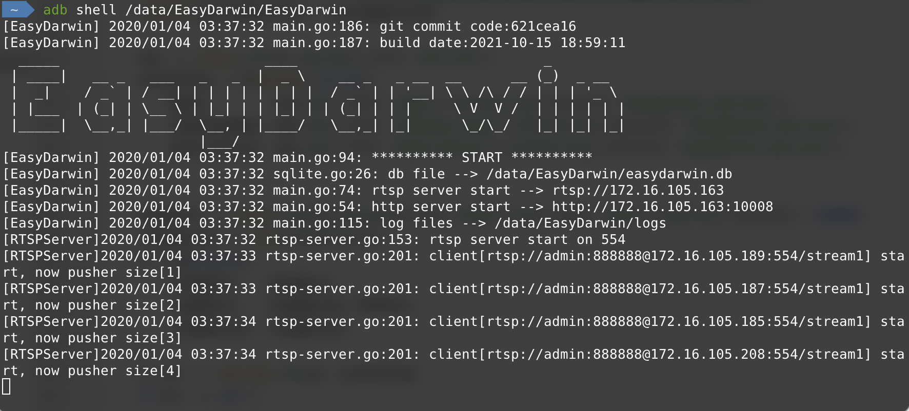
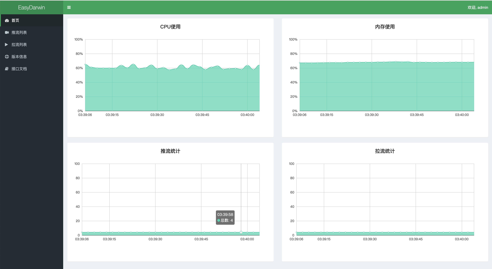

<!doctype html>
<html lang="zh-CN">
<head><meta name="generator" content="Hexo 3.9.0">
    <meta charset="UTF-8">
    <meta http-equiv="X-UA-Compatible" content="IE=11,IE=10,IE=9,IE=8">
    <meta name="baidu-site-verification" content="dIcXMeY8Ya">
    
    <title>记一次使用CGo的Golang项目交叉编译遇到的问题及解决步骤 | 斯人笔记本 - IMSRY - 个人博客 原创文章 学习笔记 技术分享</title>
    <meta name="viewport" content="width=device-width, initial-scale=1, maximum-scale=1, user-scalable=0">
    <meta name="keywords" content="Anthony, 刘经济, 技术博客, 个人博客, PHP, Golang, Linux, FullStack">
    <meta name="description" content="待人以儒墨，不热爱前端技术的后端开发不是一个好的吃货。">

    
    <link rel="alternative" href="/atom.xml" title="斯人笔记本 - IMSRY - 个人博客 原创文章 学习笔记 技术分享" type="application/atom+xml">
    
    
    <link rel="shortcut icon" href="/favicon.ico">
    
    <link rel="stylesheet" href="/css/style.css">
    <!--[if lt IE 9]>
    <script src="/js/html5.js"></script>
    <![endif]-->
    
<script>
var _hmt = _hmt || [];
(function() {
  var hm = document.createElement("script");
  hm.src = "https://hm.baidu.com/hm.js?d5ebf515ab530cfbdda5f5c85093fb41";
  var s = document.getElementsByTagName("script")[0]; 
  s.parentNode.insertBefore(hm, s);
})();
</script>


</head>
</html>
<body class="home">
    <!--[if lt IE 9]>
    <div class="browsehappy">
        当前网页 <strong>不支持</strong>
        你正在使用的浏览器. 为了正常的访问, 请 <a href="http://browsehappy.com/">升级你的浏览器</a>.
    </div>
    <![endif]-->

    <!-- 博客头部 -->
    <header class="header">
    <section class="container header-main">
        <div class="logo">
            <a href="/">
                <div class="cover">
                    <span class="name">斯人笔记本 - IMSRY - 个人博客 原创文章 学习笔记 技术分享</span>
                    <span class="description">IMSRY</span>
                </div>
            </a>
        </div>
        <div class="dropnav icon-paragraph-justify" id="JELON__btnDropNav"></div>
        <ul class="menu hidden" id="JELON__menu">
            
            <li rel="/posts/e6ef1b5e.html" class="item ">
                <a href="/" title="首页" class="icon-home">&nbsp;首页</a>
            </li>
            
            <li rel="/posts/e6ef1b5e.html" class="item ">
                <a href="/about/" title="关于" class="icon-about">&nbsp;关于</a>
            </li>
            
            <li rel="/posts/e6ef1b5e.html" class="item ">
                <a href="/comment/" title="留言" class="icon-comment">&nbsp;留言</a>
            </li>
            
        </ul>
        <div class="profile clearfix">
            <div class="feeds fl">
                
                
                <p class="links">
                    
                        <a href="https://github.com/haowanxing" target="_blank">Github</a>
                        |
                    
                </p>
                <p class="sns">
                    
                        <a href="http://weibo.com/u/2214092525" class="sinaweibo" target="_blank"><b>■</b> 新浪微博</a>
                    
                        <a href="https://www.facebook.com/imsry.cn/" class="qqweibo" target="_blank"><b>■</b> Facebook</a>
                    
                    <a href="javascript: void(0);" class="wechat">
                        <b>■</b>
                        公众号
                        <span class="popover">
                            
                            <i class="arrow"></i>
                        </span>
                    </a>
                </p>
                
            </div>
            <div class="avatar fr">
                
            </div>
        </div>
    </section>
</header>


    <!-- 博客正文 -->
    <div class="container body clearfix">
        <section class="content">
            <div class="content-main widget">
                <!-- 文章页 -->
<!-- 文章 -->
<article class="post article">
    <header class="text-center">
        <h3 class="post-title"><span>记一次使用CGo的Golang项目交叉编译遇到的问题及解决步骤</span></h3>
    </header>
    <p class="post-meta text-center">
        刘经济 发表于
        <time datetime="2021-10-18T02:08:41.000Z">2021-10-18 10:08:41</time>

        <!-- 不蒜子统计 -->
        <span id="busuanzi_container_page_pv" style='display:none'">
              <i class="icon-smile icon"></i> 阅读数：<span id="busuanzi_value_page_pv"></span>次
        </span>


    </p>
    <div class="post-content">
        <h2 id="前言"><a href="#前言" class="headerlink" title="前言"></a>前言</h2><p>本次遇到的项目是<a href="https://github.com/EasyDarwin/EasyDarwin" target="_blank" rel="noopener">EasyDarwin</a>，一个基于Go语言研发和维护的高性能RTSP流媒体服务器。我的目标是能够让其运行在创通联达<em>Thundercomm</em>推出的TurboX C610开发板上，开发板支持纯Linux系统和Android10，因为需要在开发板上实现本地播放视频流，所以本次编译的目标系统是安卓（其实二者对编译影响不大）。</p>
<p>编译平台：</p>
<ul>
<li>MacBook Pro（Big Sur 11.6）</li>
<li>处理器：2.6 GHz 六核Intel Core i7</li>
<li>内存：16 GB 2667 MHz DDR4</li>
</ul>
<p>目标平台：</p>
<figure class="highlight bash"><table><tr><td class="gutter"><pre><span class="line">1</span><br><span class="line">2</span><br><span class="line">3</span><br><span class="line">4</span><br><span class="line">5</span><br><span class="line">6</span><br><span class="line">7</span><br><span class="line">8</span><br><span class="line">9</span><br><span class="line">10</span><br><span class="line">11</span><br><span class="line">12</span><br><span class="line">13</span><br><span class="line">14</span><br><span class="line">15</span><br><span class="line">16</span><br><span class="line">17</span><br><span class="line">18</span><br><span class="line">19</span><br><span class="line">20</span><br><span class="line">21</span><br><span class="line">22</span><br><span class="line">23</span><br><span class="line">24</span><br><span class="line">25</span><br><span class="line">26</span><br><span class="line">27</span><br></pre></td><td class="code"><pre><span class="line">$&gt; getprop ro.product.cpu.abi</span><br><span class="line">arm64-v8a</span><br><span class="line">$&gt; uname <span class="_">-a</span></span><br><span class="line">Linux localhost 4.14.117+ <span class="comment">#1 SMP PREEMPT Sun Sep 26 19:31:44 CST 2021 aarch64</span></span><br><span class="line">$&gt; cat /proc/version</span><br><span class="line">Linux version 4.14.117+ (cocafe@ubuntu-v3-rocket) (clang version 8.0.12 <span class="keyword">for</span> Android NDK) <span class="comment">#1 SMP PREEMPT Sun Sep 26 19:31:44 CST 2021</span></span><br><span class="line">$&gt; cat /proc/cpuinfo</span><br><span class="line">Processor	: AArch64 Processor rev 14 (aarch64)</span><br><span class="line">processor	: 0</span><br><span class="line">BogoMIPS	: 38.40</span><br><span class="line">Features	: fp asimd evtstrm aes pmull sha1 sha2 crc32 atomics fphp asimdhp cpuid asimdrdm lrcpc dcpop asimddp</span><br><span class="line">CPU implementer	: 0x51</span><br><span class="line">CPU architecture: 8</span><br><span class="line">CPU variant	: 0xd</span><br><span class="line">CPU part	: 0x805</span><br><span class="line">CPU revision	: 14</span><br><span class="line"><span class="comment"># 此处省略6个...</span></span><br><span class="line">processor	: 7</span><br><span class="line">BogoMIPS	: 38.40</span><br><span class="line">Features	: fp asimd evtstrm aes pmull sha1 sha2 crc32 atomics fphp asimdhp cpuid asimdrdm lrcpc dcpop asimddp</span><br><span class="line">CPU implementer	: 0x51</span><br><span class="line">CPU architecture: 8</span><br><span class="line">CPU variant	: 0xd</span><br><span class="line">CPU part	: 0x804</span><br><span class="line">CPU revision	: 14</span><br><span class="line"></span><br><span class="line">Hardware	: Qualcomm Technologies, Inc QCS610</span><br></pre></td></tr></table></figure>
<p>先后也尝试过在Window和docker(alpha go &amp; Ubuntu 18.04)上编译，均没有成功，最后还是在我的笔记本上解决了，所以这里就记录一下这个解决过程。</p>
<h2 id="一、Clone项目"><a href="#一、Clone项目" class="headerlink" title="一、Clone项目"></a>一、Clone项目</h2><p>根据项目说明，先获取项目代码：</p>
<figure class="highlight bash"><table><tr><td class="gutter"><pre><span class="line">1</span><br><span class="line">2</span><br><span class="line">3</span><br><span class="line">4</span><br></pre></td><td class="code"><pre><span class="line"><span class="built_in">cd</span> <span class="variable">$GOPATH</span>/src/github.com</span><br><span class="line">mkdir EasyDarwin &amp;&amp; <span class="built_in">cd</span> EasyDarwin</span><br><span class="line">git <span class="built_in">clone</span> https://github.com/EasyDarwin/EasyDarwin.git --depth=1 EasyDarwin</span><br><span class="line"><span class="built_in">cd</span> EasyDarwin</span><br></pre></td></tr></table></figure>
<p>项目的根目录文件如下：</p>
<figure class="highlight bash"><table><tr><td class="gutter"><pre><span class="line">1</span><br><span class="line">2</span><br><span class="line">3</span><br><span class="line">4</span><br><span class="line">5</span><br><span class="line">6</span><br><span class="line">7</span><br><span class="line">8</span><br><span class="line">9</span><br><span class="line">10</span><br><span class="line">11</span><br><span class="line">12</span><br><span class="line">13</span><br><span class="line">14</span><br><span class="line">15</span><br><span class="line">16</span><br><span class="line">17</span><br><span class="line">18</span><br></pre></td><td class="code"><pre><span class="line"> ~/Workspaces/GoPath/src/github.com/EasyDarwin/EasyDarwin   master  ls -lrt</span><br><span class="line">total 9944</span><br><span class="line">-rw-r--r--   1 anthony  staff     1410 10 18 10:29 EasyDarwin_windows.syso</span><br><span class="line">-rw-r--r--   1 anthony  staff     3283 10 18 10:29 README.md</span><br><span class="line">-rw-r--r--   1 anthony  staff  2525696 10 18 10:29 ServiceInstall-EasyDarwin.exe</span><br><span class="line">-rw-r--r--   1 anthony  staff  2525696 10 18 10:29 ServiceUninstall-EasyDarwin.exe</span><br><span class="line">-rw-r--r--   1 anthony  staff     2180 10 18 10:29 easydarwin.ini</span><br><span class="line">-rw-r--r--   1 anthony  staff     1150 10 18 10:29 ed.ico</span><br><span class="line">-rw-r--r--   1 anthony  staff     5473 10 18 10:29 main.go</span><br><span class="line">drwxr-xr-x   5 anthony  staff      160 10 18 10:29 models</span><br><span class="line">-rw-r--r--   1 anthony  staff     1878 10 18 10:29 package.json</span><br><span class="line">drwxr-xr-x   8 anthony  staff      256 10 18 10:29 routers</span><br><span class="line">drwxr-xr-x  15 anthony  staff      480 10 18 10:29 rtsp</span><br><span class="line">-rwxr-xr-x   1 anthony  staff       92 10 18 10:29 start.sh</span><br><span class="line">-rwxr-xr-x   1 anthony  staff       93 10 18 10:29 stop.sh</span><br><span class="line">drwxr-xr-x   6 anthony  staff      192 10 18 10:29 vendor</span><br><span class="line">drwxr-xr-x  15 anthony  staff      480 10 18 10:29 web_src</span><br><span class="line">drwxr-xr-x  13 anthony  staff      416 10 18 10:29 www</span><br></pre></td></tr></table></figure>
<p>可以看到，里面有针对Windows的服务装载和卸载程序，有前后端分离出来的web代码，还有用于在linux上装载和卸载的shell脚本。这些我们先不管，看到这里有main.go文件，先看看直接编译！</p>
<h2 id="二、编译过程"><a href="#二、编译过程" class="headerlink" title="二、编译过程"></a>二、编译过程</h2><h3 id="直接编译"><a href="#直接编译" class="headerlink" title="直接编译"></a>直接编译</h3><figure class="highlight bash"><table><tr><td class="gutter"><pre><span class="line">1</span><br><span class="line">2</span><br><span class="line">3</span><br><span class="line">4</span><br></pre></td><td class="code"><pre><span class="line"> ~/Workspaces/GoPath/src/github.com/EasyDarwin/EasyDarwin   master  go build -o EasyDarwin</span><br><span class="line">go: cannot find main module, but found vendor/vendor.json <span class="keyword">in</span> /Users/anthony/Workspaces/GoPath/src/github.com/EasyDarwin/EasyDarwin</span><br><span class="line">	to create a module there, run:</span><br><span class="line">	go mod init</span><br></pre></td></tr></table></figure>
<p>报错了！错误原因是找不到相关的模块，提示发现了vendor.json，可以尝试创建模块。</p>
<figure class="highlight bash"><table><tr><td class="gutter"><pre><span class="line">1</span><br><span class="line">2</span><br><span class="line">3</span><br><span class="line">4</span><br><span class="line">5</span><br><span class="line">6</span><br><span class="line">7</span><br><span class="line">8</span><br><span class="line">9</span><br><span class="line">10</span><br><span class="line">11</span><br><span class="line">12</span><br><span class="line">13</span><br><span class="line">14</span><br><span class="line">15</span><br><span class="line">16</span><br><span class="line">17</span><br><span class="line">18</span><br><span class="line">19</span><br><span class="line">20</span><br><span class="line">21</span><br><span class="line">22</span><br><span class="line">23</span><br><span class="line">24</span><br><span class="line">25</span><br><span class="line">26</span><br><span class="line">27</span><br><span class="line">28</span><br><span class="line">29</span><br><span class="line">30</span><br><span class="line">31</span><br><span class="line">32</span><br><span class="line">33</span><br><span class="line">34</span><br><span class="line">35</span><br><span class="line">36</span><br><span class="line">37</span><br><span class="line">38</span><br></pre></td><td class="code"><pre><span class="line"> ~/Workspaces/GoPath/src/github.com/EasyDarwin/EasyDarwin &gt; master &gt;$ go mod init</span><br><span class="line">go: creating new go.mod: module github.com/EasyDarwin/EasyDarwin</span><br><span class="line">go: converting vendor/vendor.json: <span class="built_in">stat</span> github.com/go-ini/ini@d0926230dda8c9e4e61040cb7825a026dee7d2d3: unknown revision d0926230dda8c9e4e61040cb7825a026dee7d2d3</span><br><span class="line">go: converting vendor/vendor.json: <span class="built_in">stat</span> github.com/eiannone/keyboard@d0926230dda8c9e4e61040cb7825a026dee7d2d3: unknown revision d0926230dda8c9e4e61040cb7825a026dee7d2d3</span><br><span class="line">go: converting vendor/vendor.json: <span class="built_in">stat</span> github.com/go-redis/redis@c3d6048651<span class="built_in">cd</span>9420b049<span class="built_in">fc</span>7ddfc232002d36e800: unknown revision c3d6048651<span class="built_in">cd</span>9420b049<span class="built_in">fc</span>7ddfc232002d36e800</span><br><span class="line">go: converting vendor/vendor.json: <span class="built_in">stat</span> github.com/go-redis/redis/internal@c3d6048651<span class="built_in">cd</span>9420b049<span class="built_in">fc</span>7ddfc232002d36e800: unknown revision c3d6048651<span class="built_in">cd</span>9420b049<span class="built_in">fc</span>7ddfc232002d36e800</span><br><span class="line">go: converting vendor/vendor.json: <span class="built_in">stat</span> github.com/go-redis/redis/internal/consistenthash@c3d6048651<span class="built_in">cd</span>9420b049<span class="built_in">fc</span>7ddfc232002d36e800: unknown revision c3d6048651<span class="built_in">cd</span>9420b049<span class="built_in">fc</span>7ddfc232002d36e800</span><br><span class="line">go: converting vendor/vendor.json: <span class="built_in">stat</span> github.com/go-redis/redis/internal/hashtag@c3d6048651<span class="built_in">cd</span>9420b049<span class="built_in">fc</span>7ddfc232002d36e800: unknown revision c3d6048651<span class="built_in">cd</span>9420b049<span class="built_in">fc</span>7ddfc232002d36e800</span><br><span class="line">go: converting vendor/vendor.json: <span class="built_in">stat</span> github.com/go-redis/redis/internal/pool@c3d6048651<span class="built_in">cd</span>9420b049<span class="built_in">fc</span>7ddfc232002d36e800: unknown revision c3d6048651<span class="built_in">cd</span>9420b049<span class="built_in">fc</span>7ddfc232002d36e800</span><br><span class="line">go: converting vendor/vendor.json: <span class="built_in">stat</span> github.com/go-redis/redis/internal/proto@c3d6048651<span class="built_in">cd</span>9420b049<span class="built_in">fc</span>7ddfc232002d36e800: unknown revision c3d6048651<span class="built_in">cd</span>9420b049<span class="built_in">fc</span>7ddfc232002d36e800</span><br><span class="line">go: converting vendor/vendor.json: <span class="built_in">stat</span> github.com/go-redis/redis/internal/util@c3d6048651<span class="built_in">cd</span>9420b049<span class="built_in">fc</span>7ddfc232002d36e800: unknown revision c3d6048651<span class="built_in">cd</span>9420b049<span class="built_in">fc</span>7ddfc232002d36e800</span><br><span class="line">go: converting vendor/vendor.json: <span class="built_in">stat</span> github.com/go-redis/redis/internal/singleflight@c3d6048651<span class="built_in">cd</span>9420b049<span class="built_in">fc</span>7ddfc232002d36e800: unknown revision c3d6048651<span class="built_in">cd</span>9420b049<span class="built_in">fc</span>7ddfc232002d36e800</span><br><span class="line">go: converting vendor/vendor.json: <span class="built_in">stat</span> github.com/gorilla/securecookie@c3d6048651<span class="built_in">cd</span>9420b049<span class="built_in">fc</span>7ddfc232002d36e800: unknown revision c3d6048651<span class="built_in">cd</span>9420b049<span class="built_in">fc</span>7ddfc232002d36e800</span><br><span class="line">go: converting vendor/vendor.json: <span class="built_in">stat</span> github.com/gorilla/context@c3d6048651<span class="built_in">cd</span>9420b049<span class="built_in">fc</span>7ddfc232002d36e800: unknown revision c3d6048651<span class="built_in">cd</span>9420b049<span class="built_in">fc</span>7ddfc232002d36e800</span><br><span class="line">go: converting vendor/vendor.json: <span class="built_in">stat</span> github.com/gorilla/sessions@c3d6048651<span class="built_in">cd</span>9420b049<span class="built_in">fc</span>7ddfc232002d36e800: unknown revision c3d6048651<span class="built_in">cd</span>9420b049<span class="built_in">fc</span>7ddfc232002d36e800</span><br><span class="line">go: converting vendor/vendor.json: <span class="built_in">stat</span> github.com/jinzhu/gorm/dialects/sqlite@d0926230dda8c9e4e61040cb7825a026dee7d2d3: unknown revision d0926230dda8c9e4e61040cb7825a026dee7d2d3</span><br><span class="line">go: converting vendor/vendor.json: <span class="built_in">stat</span> github.com/lestrrat-go/file-rotatelogs@d0926230dda8c9e4e61040cb7825a026dee7d2d3: unknown revision d0926230dda8c9e4e61040cb7825a026dee7d2d3</span><br><span class="line">go: converting vendor/vendor.json: <span class="built_in">stat</span> github.com/lestrrat-go/file-rotatelogs/internal/option@d0926230dda8c9e4e61040cb7825a026dee7d2d3: unknown revision d0926230dda8c9e4e61040cb7825a026dee7d2d3</span><br><span class="line">go: converting vendor/vendor.json: <span class="built_in">stat</span> github.com/mattn/go-sqlite3@d0926230dda8c9e4e61040cb7825a026dee7d2d3: unknown revision d0926230dda8c9e4e61040cb7825a026dee7d2d3</span><br><span class="line">go: converting vendor/vendor.json: <span class="built_in">stat</span> github.com/lestrrat-go/strftime@d0926230dda8c9e4e61040cb7825a026dee7d2d3: unknown revision d0926230dda8c9e4e61040cb7825a026dee7d2d3</span><br><span class="line">go: converting vendor/vendor.json: <span class="built_in">stat</span> github.com/penggy/EasyGoLib/db@d0926230dda8c9e4e61040cb7825a026dee7d2d3: git fetch <span class="_">-f</span> origin refs/heads/*:refs/heads/* refs/tags/*:refs/tags/* <span class="keyword">in</span> /Users/anthony/Workspaces/GoPath/pkg/mod/cache/vcs/33f838a753e8fa7eab63e13398d4a274aa8b91dc573e2ab4195d68907e5d3305: <span class="built_in">exit</span> status 128:</span><br><span class="line">	fatal: could not <span class="built_in">read</span> Username <span class="keyword">for</span> <span class="string">'https://github.com'</span>: terminal prompts disabled</span><br><span class="line">go: converting vendor/vendor.json: <span class="built_in">stat</span> github.com/pkg/errors@d0926230dda8c9e4e61040cb7825a026dee7d2d3: unknown revision d0926230dda8c9e4e61040cb7825a026dee7d2d3</span><br><span class="line">go: converting vendor/vendor.json: <span class="built_in">stat</span> github.com/penggy/EasyGoLib/utils@c61bc7ee568dd64a40f19ff44e32db22134226d9: git fetch <span class="_">-f</span> origin refs/heads/*:refs/heads/* refs/tags/*:refs/tags/* <span class="keyword">in</span> /Users/anthony/Workspaces/GoPath/pkg/mod/cache/vcs/33f838a753e8fa7eab63e13398d4a274aa8b91dc573e2ab4195d68907e5d3305: <span class="built_in">exit</span> status 128:</span><br><span class="line">	fatal: could not <span class="built_in">read</span> Username <span class="keyword">for</span> <span class="string">'https://github.com'</span>: terminal prompts disabled</span><br><span class="line">go: converting vendor/vendor.json: <span class="built_in">stat</span> github.com/penggy/sessions@c3d6048651<span class="built_in">cd</span>9420b049<span class="built_in">fc</span>7ddfc232002d36e800: git fetch <span class="_">-f</span> origin refs/heads/*:refs/heads/* refs/tags/*:refs/tags/* <span class="keyword">in</span> /Users/anthony/Workspaces/GoPath/pkg/mod/cache/vcs/e4e0a9ef39fd42fbd44ddf37bd1c39fe9005b110f5974ee01a90be0a8cb82b27: <span class="built_in">exit</span> status 128:</span><br><span class="line">	fatal: could not <span class="built_in">read</span> Username <span class="keyword">for</span> <span class="string">'https://github.com'</span>: terminal prompts disabled</span><br><span class="line">go: converting vendor/vendor.json: <span class="built_in">stat</span> github.com/penggy/service@cab262f1f320bfa9ba0e9b40388ae9e09adc9692: git fetch <span class="_">-f</span> origin refs/heads/*:refs/heads/* refs/tags/*:refs/tags/* <span class="keyword">in</span> /Users/anthony/Workspaces/GoPath/pkg/mod/cache/vcs/2f018279b22aa607c613f2ff23b2c95fdfb3ce385f093e56e041520af9ae9744: <span class="built_in">exit</span> status 128:</span><br><span class="line">	fatal: could not <span class="built_in">read</span> Username <span class="keyword">for</span> <span class="string">'https://github.com'</span>: terminal prompts disabled</span><br><span class="line">go: converting vendor/vendor.json: <span class="built_in">stat</span> golang.org/x/sys/windows/svc@cab262f1f320bfa9ba0e9b40388ae9e09adc9692: unknown revision cab262f1f320bfa9ba0e9b40388ae9e09adc9692</span><br><span class="line">go: converting vendor/vendor.json: <span class="built_in">stat</span> golang.org/x/sys/windows/registry@cab262f1f320bfa9ba0e9b40388ae9e09adc9692: unknown revision cab262f1f320bfa9ba0e9b40388ae9e09adc9692</span><br><span class="line">go: converting vendor/vendor.json: <span class="built_in">stat</span> golang.org/x/sys/windows/svc/eventlog@cab262f1f320bfa9ba0e9b40388ae9e09adc9692: unknown revision cab262f1f320bfa9ba0e9b40388ae9e09adc9692</span><br><span class="line">go: converting vendor/vendor.json: <span class="built_in">stat</span> golang.org/x/sys/windows/svc/mgr@cab262f1f320bfa9ba0e9b40388ae9e09adc9692: unknown revision cab262f1f320bfa9ba0e9b40388ae9e09adc9692</span><br><span class="line">go: converting vendor/vendor.json: <span class="built_in">stat</span> golang.org/x/sys/windows@753144271b444787650750f626cc62831f63bc9c: unknown revision 753144271b444787650750f626cc62831f63bc9c</span><br><span class="line">go: converting vendor/vendor.json: <span class="built_in">stat</span> golang.org/x/sys/unix@753144271b444787650750f626cc62831f63bc9c: unknown revision 753144271b444787650750f626cc62831f63bc9c</span><br><span class="line">go: copying requirements from vendor/vendor.json</span><br><span class="line">go: to add module requirements and sums:</span><br><span class="line">	go mod tidy</span><br></pre></td></tr></table></figure>
<p>根据提示，执行<code>go mod tidy</code>来添加依赖：</p>
<figure class="highlight bash"><table><tr><td class="gutter"><pre><span class="line">1</span><br><span class="line">2</span><br><span class="line">3</span><br><span class="line">4</span><br><span class="line">5</span><br><span class="line">6</span><br><span class="line">7</span><br><span class="line">8</span><br><span class="line">9</span><br><span class="line">10</span><br><span class="line">11</span><br><span class="line">12</span><br><span class="line">13</span><br><span class="line">14</span><br><span class="line">15</span><br><span class="line">16</span><br><span class="line">17</span><br><span class="line">18</span><br><span class="line">19</span><br><span class="line">20</span><br><span class="line">21</span><br><span class="line">22</span><br><span class="line">23</span><br><span class="line">24</span><br><span class="line">25</span><br><span class="line">26</span><br><span class="line">27</span><br><span class="line">28</span><br><span class="line">29</span><br><span class="line">30</span><br><span class="line">31</span><br><span class="line">32</span><br><span class="line">33</span><br><span class="line">34</span><br><span class="line">35</span><br><span class="line">36</span><br><span class="line">37</span><br><span class="line">38</span><br><span class="line">39</span><br><span class="line">40</span><br><span class="line">41</span><br><span class="line">42</span><br><span class="line">43</span><br><span class="line">44</span><br><span class="line">45</span><br><span class="line">46</span><br><span class="line">47</span><br><span class="line">48</span><br><span class="line">49</span><br><span class="line">50</span><br><span class="line">51</span><br><span class="line">52</span><br><span class="line">53</span><br><span class="line">54</span><br><span class="line">55</span><br><span class="line">56</span><br><span class="line">57</span><br><span class="line">58</span><br><span class="line">59</span><br><span class="line">60</span><br><span class="line">61</span><br><span class="line">62</span><br><span class="line">63</span><br><span class="line">64</span><br><span class="line">65</span><br><span class="line">66</span><br></pre></td><td class="code"><pre><span class="line"> ~/Workspaces/GoPath/src/github.com/EasyDarwin/EasyDarwin &gt; master &gt;$ go mod tidy</span><br><span class="line">go: finding module <span class="keyword">for</span> package github.com/penggy/service</span><br><span class="line">go: finding module <span class="keyword">for</span> package github.com/stretchr/testify/assert</span><br><span class="line">go: finding module <span class="keyword">for</span> package golang.org/x/net/context</span><br><span class="line">go: finding module <span class="keyword">for</span> package github.com/denisenkom/go-mssqldb</span><br><span class="line">go: finding module <span class="keyword">for</span> package github.com/erikstmartin/go-testdb</span><br><span class="line">go: finding module <span class="keyword">for</span> package github.com/penggy/EasyGoLib/db</span><br><span class="line">go: finding module <span class="keyword">for</span> package gopkg.in/go-playground/assert.v1</span><br><span class="line">go: finding module <span class="keyword">for</span> package github.com/jinzhu/now</span><br><span class="line">go: finding module <span class="keyword">for</span> package golang.org/x/sys/unix</span><br><span class="line">go: finding module <span class="keyword">for</span> package golang.org/x/sys/windows</span><br><span class="line">go: finding module <span class="keyword">for</span> package github.com/penggy/sessions</span><br><span class="line">go: finding module <span class="keyword">for</span> package github.com/penggy/EasyGoLib/utils</span><br><span class="line">go: finding module <span class="keyword">for</span> package github.com/go-sql-driver/mysql</span><br><span class="line">go: downloading golang.org/x/sys v0.0.0-20211015200801-69063c4bb744</span><br><span class="line">go: finding module <span class="keyword">for</span> package github.com/lib/pq</span><br><span class="line">go: downloading github.com/stretchr/testify v1.7.0</span><br><span class="line">go: downloading golang.org/x/net v0.0.0-20211015210444-4f30a5c0130f</span><br><span class="line">go: downloading github.com/jinzhu/now v1.1.2</span><br><span class="line">go: downloading github.com/denisenkom/go-mssqldb v0.11.0</span><br><span class="line">go: finding module <span class="keyword">for</span> package github.com/lib/pq/hstore</span><br><span class="line">go: finding module <span class="keyword">for</span> package github.com/mattn/go-sqlite3</span><br><span class="line">go: finding module <span class="keyword">for</span> package golang.org/x/sync/errgroup</span><br><span class="line">go: finding module <span class="keyword">for</span> package github.com/stretchr/testify/require</span><br><span class="line">go: downloading github.com/go-sql-driver/mysql v1.6.0</span><br><span class="line">go: downloading github.com/lib/pq v1.10.3</span><br><span class="line">go: found golang.org/x/sys/unix <span class="keyword">in</span> golang.org/x/sys v0.0.0-20211015200801-69063c4bb744</span><br><span class="line">go: found golang.org/x/sys/windows <span class="keyword">in</span> golang.org/x/sys v0.0.0-20211015200801-69063c4bb744</span><br><span class="line">go: found github.com/erikstmartin/go-testdb <span class="keyword">in</span> github.com/erikstmartin/go-testdb v0.0.0-20160219214506-8d10e4a1bae5</span><br><span class="line">go: found github.com/jinzhu/now <span class="keyword">in</span> github.com/jinzhu/now v1.1.2</span><br><span class="line">go: found github.com/stretchr/testify/assert <span class="keyword">in</span> github.com/stretchr/testify v1.7.0</span><br><span class="line">go: found golang.org/x/net/context <span class="keyword">in</span> golang.org/x/net v0.0.0-20211015210444-4f30a5c0130f</span><br><span class="line">go: found gopkg.in/go-playground/assert.v1 <span class="keyword">in</span> gopkg.in/go-playground/assert.v1 v1.2.1</span><br><span class="line">go: found github.com/denisenkom/go-mssqldb <span class="keyword">in</span> github.com/denisenkom/go-mssqldb v0.11.0</span><br><span class="line">go: found github.com/go-sql-driver/mysql <span class="keyword">in</span> github.com/go-sql-driver/mysql v1.6.0</span><br><span class="line">go: found github.com/lib/pq <span class="keyword">in</span> github.com/lib/pq v1.10.3</span><br><span class="line">go: found github.com/lib/pq/hstore <span class="keyword">in</span> github.com/lib/pq v1.10.3</span><br><span class="line">go: found github.com/mattn/go-sqlite3 <span class="keyword">in</span> github.com/mattn/go-sqlite3 v1.14.8</span><br><span class="line">go: found golang.org/x/sync/errgroup <span class="keyword">in</span> golang.org/x/sync v0.0.0-20210220032951-036812b2e83c</span><br><span class="line">go: found github.com/stretchr/testify/require <span class="keyword">in</span> github.com/stretchr/testify v1.7.0</span><br><span class="line">go: downloading gopkg.in/yaml.v3 v3.0.0-20200313102051-9f266ea9e77c</span><br><span class="line">go: downloading golang.org/x/crypto v0.0.0-20190325154230<span class="_">-a</span>5d413f7728c</span><br><span class="line">go: finding module <span class="keyword">for</span> package github.com/penggy/sessions</span><br><span class="line">go: finding module <span class="keyword">for</span> package github.com/penggy/service</span><br><span class="line">go: finding module <span class="keyword">for</span> package github.com/penggy/EasyGoLib/db</span><br><span class="line">go: finding module <span class="keyword">for</span> package github.com/penggy/EasyGoLib/utils</span><br><span class="line">github.com/EasyDarwin/EasyDarwin imports</span><br><span class="line">	github.com/penggy/EasyGoLib/db: cannot find module providing package github.com/penggy/EasyGoLib/db: module github.com/penggy/EasyGoLib/db: git ls-remote -q origin <span class="keyword">in</span> /Users/anthony/Workspaces/GoPath/pkg/mod/cache/vcs/33f838a753e8fa7eab63e13398d4a274aa8b91dc573e2ab4195d68907e5d3305: <span class="built_in">exit</span> status 128:</span><br><span class="line">	fatal: could not <span class="built_in">read</span> Username <span class="keyword">for</span> <span class="string">'https://github.com'</span>: terminal prompts disabled</span><br><span class="line">Confirm the import path was entered correctly.</span><br><span class="line">If this is a private repository, see https://golang.org/doc/faq<span class="comment">#git_https for additional information.</span></span><br><span class="line">github.com/EasyDarwin/EasyDarwin imports</span><br><span class="line">	github.com/penggy/EasyGoLib/utils: cannot find module providing package github.com/penggy/EasyGoLib/utils: module github.com/penggy/EasyGoLib/utils: git ls-remote -q origin <span class="keyword">in</span> /Users/anthony/Workspaces/GoPath/pkg/mod/cache/vcs/33f838a753e8fa7eab63e13398d4a274aa8b91dc573e2ab4195d68907e5d3305: <span class="built_in">exit</span> status 128:</span><br><span class="line">	fatal: could not <span class="built_in">read</span> Username <span class="keyword">for</span> <span class="string">'https://github.com'</span>: terminal prompts disabled</span><br><span class="line">Confirm the import path was entered correctly.</span><br><span class="line">If this is a private repository, see https://golang.org/doc/faq<span class="comment">#git_https for additional information.</span></span><br><span class="line">github.com/EasyDarwin/EasyDarwin imports</span><br><span class="line">	github.com/penggy/service: cannot find module providing package github.com/penggy/service: module github.com/penggy/service: git ls-remote -q origin <span class="keyword">in</span> /Users/anthony/Workspaces/GoPath/pkg/mod/cache/vcs/2f018279b22aa607c613f2ff23b2c95fdfb3ce385f093e56e041520af9ae9744: <span class="built_in">exit</span> status 128:</span><br><span class="line">	fatal: could not <span class="built_in">read</span> Username <span class="keyword">for</span> <span class="string">'https://github.com'</span>: terminal prompts disabled</span><br><span class="line">Confirm the import path was entered correctly.</span><br><span class="line">If this is a private repository, see https://golang.org/doc/faq<span class="comment">#git_https for additional information.</span></span><br><span class="line">github.com/EasyDarwin/EasyDarwin/routers imports</span><br><span class="line">	github.com/penggy/sessions: cannot find module providing package github.com/penggy/sessions: module github.com/penggy/sessions: git ls-remote -q origin <span class="keyword">in</span> /Users/anthony/Workspaces/GoPath/pkg/mod/cache/vcs/e4e0a9ef39fd42fbd44ddf37bd1c39fe9005b110f5974ee01a90be0a8cb82b27: <span class="built_in">exit</span> status 128:</span><br><span class="line">	fatal: could not <span class="built_in">read</span> Username <span class="keyword">for</span> <span class="string">'https://github.com'</span>: terminal prompts disabled</span><br><span class="line">Confirm the import path was entered correctly.</span><br><span class="line">If this is a private repository, see https://golang.org/doc/faq<span class="comment">#git_https for additional information.</span></span><br></pre></td></tr></table></figure>
<p>失败了！其实在上个步骤的时候就已经能够预判可能有问题了，遇到了<code>Fatal</code>错误肯定就很难继续下去，根据报错分析问题原因，可以看到重点提示是：<code>fatal: could not read Username for &#39;https://github.com&#39;: terminal prompts disabled</code>。大概意思是不能从终端获取用户名？为什么我下载个依赖还要我的用户名呢？然后我去看了一下都有哪些依赖报这个错误。</p>
<ol>
<li>github.com/penggy/EasyGoLib/db</li>
<li>github.com/penggy/EasyGoLib/utils</li>
<li>github.com/penggy/service</li>
<li>github.com/penggy/sessions</li>
</ol>
<p>好家伙，<code>penggy</code>提供的这个4个仓库源码均不在了！好在我搜索技能还算可以，找到了原先可用的库：</p>
<ol>
<li>github.com/MeloQi/EasyGoLib/db</li>
<li>github.com/MeloQi/EasyGoLib/utils</li>
<li>github.com/MeloQi/service</li>
<li>github.com/MeloQi/sessions</li>
</ol>
<p>然后替换整个项目中的依赖代码，我索性将所有<code>github.com/penggy</code>开头的串都替换成<code>github.com/MeloQi</code>，看看结果！</p>
<p>重新初始化模块以重复上述步骤：</p>
<figure class="highlight bash"><table><tr><td class="gutter"><pre><span class="line">1</span><br><span class="line">2</span><br><span class="line">3</span><br></pre></td><td class="code"><pre><span class="line">&gt;$ rm go.mod</span><br><span class="line">&gt;$ go mod init</span><br><span class="line">&gt;$ go mod tidy</span><br></pre></td></tr></table></figure>
<p>一切正常没有报错了！尝试一直编译：</p>
<figure class="highlight bash"><table><tr><td class="gutter"><pre><span class="line">1</span><br><span class="line">2</span><br><span class="line">3</span><br><span class="line">4</span><br><span class="line">5</span><br><span class="line">6</span><br><span class="line">7</span><br><span class="line">8</span><br><span class="line">9</span><br><span class="line">10</span><br><span class="line">11</span><br><span class="line">12</span><br><span class="line">13</span><br><span class="line">14</span><br><span class="line">15</span><br><span class="line">16</span><br><span class="line">17</span><br><span class="line">18</span><br><span class="line">19</span><br><span class="line">20</span><br><span class="line">21</span><br><span class="line">22</span><br><span class="line">23</span><br><span class="line">24</span><br><span class="line">25</span><br><span class="line">26</span><br><span class="line">27</span><br><span class="line">28</span><br><span class="line">29</span><br><span class="line">30</span><br><span class="line">31</span><br><span class="line">32</span><br><span class="line">33</span><br><span class="line">34</span><br><span class="line">35</span><br><span class="line">36</span><br><span class="line">37</span><br><span class="line">38</span><br><span class="line">39</span><br><span class="line">40</span><br><span class="line">41</span><br><span class="line">42</span><br><span class="line">43</span><br><span class="line">44</span><br><span class="line">45</span><br><span class="line">46</span><br><span class="line">47</span><br><span class="line">48</span><br><span class="line">49</span><br></pre></td><td class="code"><pre><span class="line"> ~/Workspaces/GoPath/src/github.com/EasyDarwin/EasyDarwin &gt; master &gt;$ go build -o EasyDarwin</span><br><span class="line">go: inconsistent vendoring <span class="keyword">in</span> /Users/anthony/Workspaces/GoPath/src/github.com/EasyDarwin/EasyDarwin:</span><br><span class="line">	github.com/MeloQi/EasyGoLib@v0.0.0-20191209094052-803960583571: is explicitly required <span class="keyword">in</span> go.mod, but not marked as explicit <span class="keyword">in</span> vendor/modules.txt</span><br><span class="line">	github.com/MeloQi/cors@v0.0.0-20191030023859-de49554d5cda: is explicitly required <span class="keyword">in</span> go.mod, but not marked as explicit <span class="keyword">in</span> vendor/modules.txt</span><br><span class="line">	github.com/MeloQi/service@v0.0.0-20191030061151-7762127fe623: is explicitly required <span class="keyword">in</span> go.mod, but not marked as explicit <span class="keyword">in</span> vendor/modules.txt</span><br><span class="line">	github.com/MeloQi/sessions@v0.0.0-20191030032128-1c51e5f867b9: is explicitly required <span class="keyword">in</span> go.mod, but not marked as explicit <span class="keyword">in</span> vendor/modules.txt</span><br><span class="line">	github.com/StackExchange/wmi@v0.0.0-20180412205111-cdffdb33acae: is explicitly required <span class="keyword">in</span> go.mod, but not marked as explicit <span class="keyword">in</span> vendor/modules.txt</span><br><span class="line">	github.com/common-nighthawk/go-figure@v0.0.0-20180619031829-18b2b544842c: is explicitly required <span class="keyword">in</span> go.mod, but not marked as explicit <span class="keyword">in</span> vendor/modules.txt</span><br><span class="line">	github.com/denisenkom/go-mssqldb@v0.11.0: is explicitly required <span class="keyword">in</span> go.mod, but not marked as explicit <span class="keyword">in</span> vendor/modules.txt</span><br><span class="line">	github.com/eiannone/keyboard@v0.0.0-20200508000154-caf4b762e807: is explicitly required <span class="keyword">in</span> go.mod, but not marked as explicit <span class="keyword">in</span> vendor/modules.txt</span><br><span class="line">	github.com/erikstmartin/go-testdb@v0.0.0-20160219214506-8d10e4a1bae5: is explicitly required <span class="keyword">in</span> go.mod, but not marked as explicit <span class="keyword">in</span> vendor/modules.txt</span><br><span class="line">	github.com/gin-contrib/pprof@v0.0.0-20180514151456-0ed7ffb6a189: is explicitly required <span class="keyword">in</span> go.mod, but not marked as explicit <span class="keyword">in</span> vendor/modules.txt</span><br><span class="line">	github.com/gin-contrib/sse@v0.0.0-20170109093832-22d885f9ecc7: is explicitly required <span class="keyword">in</span> go.mod, but not marked as explicit <span class="keyword">in</span> vendor/modules.txt</span><br><span class="line">	github.com/gin-contrib/static@v0.0.0-20180301030858-73da7037e716: is explicitly required <span class="keyword">in</span> go.mod, but not marked as explicit <span class="keyword">in</span> vendor/modules.txt</span><br><span class="line">	github.com/gin-gonic/gin@v1.3.0: is explicitly required <span class="keyword">in</span> go.mod, but not marked as explicit <span class="keyword">in</span> vendor/modules.txt</span><br><span class="line">	github.com/go-ini/ini@v1.63.2: is explicitly required <span class="keyword">in</span> go.mod, but not marked as explicit <span class="keyword">in</span> vendor/modules.txt</span><br><span class="line">	github.com/go-ole/go-ole@v1.2.2-0.20180213002836<span class="_">-a</span>1ec82a652eb: is explicitly required <span class="keyword">in</span> go.mod, but not marked as explicit <span class="keyword">in</span> vendor/modules.txt</span><br><span class="line">	github.com/go-redis/redis@v6.15.9+incompatible: is explicitly required <span class="keyword">in</span> go.mod, but not marked as explicit <span class="keyword">in</span> vendor/modules.txt</span><br><span class="line">	github.com/go-sql-driver/mysql@v1.6.0: is explicitly required <span class="keyword">in</span> go.mod, but not marked as explicit <span class="keyword">in</span> vendor/modules.txt</span><br><span class="line">	github.com/gorilla/context@v1.1.1: is explicitly required <span class="keyword">in</span> go.mod, but not marked as explicit <span class="keyword">in</span> vendor/modules.txt</span><br><span class="line">	github.com/gorilla/sessions@v1.2.1: is explicitly required <span class="keyword">in</span> go.mod, but not marked as explicit <span class="keyword">in</span> vendor/modules.txt</span><br><span class="line">	github.com/jinzhu/gorm@v1.9.2-0.20180512062900-82eb9f8a5bbb: is explicitly required <span class="keyword">in</span> go.mod, but not marked as explicit <span class="keyword">in</span> vendor/modules.txt</span><br><span class="line">	github.com/jinzhu/inflection@v0.0.0-20180308033659-04140366298a: is explicitly required <span class="keyword">in</span> go.mod, but not marked as explicit <span class="keyword">in</span> vendor/modules.txt</span><br><span class="line">	github.com/jinzhu/now@v1.1.2: is explicitly required <span class="keyword">in</span> go.mod, but not marked as explicit <span class="keyword">in</span> vendor/modules.txt</span><br><span class="line">	github.com/jonboulle/clockwork@v0.2.2: is explicitly required <span class="keyword">in</span> go.mod, but not marked as explicit <span class="keyword">in</span> vendor/modules.txt</span><br><span class="line">	github.com/json-iterator/go@v0.0.0-20180424004623-2ddf6d758266: is explicitly required <span class="keyword">in</span> go.mod, but not marked as explicit <span class="keyword">in</span> vendor/modules.txt</span><br><span class="line">	github.com/lestrrat-go/file-rotatelogs@v2.4.0+incompatible: is explicitly required <span class="keyword">in</span> go.mod, but not marked as explicit <span class="keyword">in</span> vendor/modules.txt</span><br><span class="line">	github.com/lestrrat-go/strftime@v1.0.5: is explicitly required <span class="keyword">in</span> go.mod, but not marked as explicit <span class="keyword">in</span> vendor/modules.txt</span><br><span class="line">	github.com/lib/pq@v1.10.3: is explicitly required <span class="keyword">in</span> go.mod, but not marked as explicit <span class="keyword">in</span> vendor/modules.txt</span><br><span class="line">	github.com/mattn/go-isatty@v0.0.4: is explicitly required <span class="keyword">in</span> go.mod, but not marked as explicit <span class="keyword">in</span> vendor/modules.txt</span><br><span class="line">	github.com/mattn/go-sqlite3@v1.14.8: is explicitly required <span class="keyword">in</span> go.mod, but not marked as explicit <span class="keyword">in</span> vendor/modules.txt</span><br><span class="line">	github.com/modern-go/concurrent@v0.0.0-20180306012644-bacd9c7ef1dd: is explicitly required <span class="keyword">in</span> go.mod, but not marked as explicit <span class="keyword">in</span> vendor/modules.txt</span><br><span class="line">	github.com/modern-go/reflect2@v0.0.0-20180511053014-58118c1ea916: is explicitly required <span class="keyword">in</span> go.mod, but not marked as explicit <span class="keyword">in</span> vendor/modules.txt</span><br><span class="line">	github.com/onsi/ginkgo@v1.16.5: is explicitly required <span class="keyword">in</span> go.mod, but not marked as explicit <span class="keyword">in</span> vendor/modules.txt</span><br><span class="line">	github.com/onsi/gomega@v1.16.0: is explicitly required <span class="keyword">in</span> go.mod, but not marked as explicit <span class="keyword">in</span> vendor/modules.txt</span><br><span class="line">	github.com/pixelbender/go-sdp@v0.0.0-20181123094152-100bc9371a0c: is explicitly required <span class="keyword">in</span> go.mod, but not marked as explicit <span class="keyword">in</span> vendor/modules.txt</span><br><span class="line">	github.com/pkg/errors@v0.9.1: is explicitly required <span class="keyword">in</span> go.mod, but not marked as explicit <span class="keyword">in</span> vendor/modules.txt</span><br><span class="line">	github.com/shirou/gopsutil@v2.17.13-0.20180417021151-63047d776e07+incompatible: is explicitly required <span class="keyword">in</span> go.mod, but not marked as explicit <span class="keyword">in</span> vendor/modules.txt</span><br><span class="line">	github.com/stretchr/testify@v1.7.0: is explicitly required <span class="keyword">in</span> go.mod, but not marked as explicit <span class="keyword">in</span> vendor/modules.txt</span><br><span class="line">	github.com/teris-io/shortid@v0.0.0-20171029131806-771a37caa5cf: is explicitly required <span class="keyword">in</span> go.mod, but not marked as explicit <span class="keyword">in</span> vendor/modules.txt</span><br><span class="line">	github.com/ugorji/go@v0.0.0-20180307152341-02537d3a3e32: is explicitly required <span class="keyword">in</span> go.mod, but not marked as explicit <span class="keyword">in</span> vendor/modules.txt</span><br><span class="line">	golang.org/x/net@v0.0.0-20211015210444-4f30a5c0130f: is explicitly required <span class="keyword">in</span> go.mod, but not marked as explicit <span class="keyword">in</span> vendor/modules.txt</span><br><span class="line">	golang.org/x/sys@v0.0.0-20211015200801-69063c4bb744: is explicitly required <span class="keyword">in</span> go.mod, but not marked as explicit <span class="keyword">in</span> vendor/modules.txt</span><br><span class="line">	gopkg.in/go-playground/assert.v1@v1.2.1: is explicitly required <span class="keyword">in</span> go.mod, but not marked as explicit <span class="keyword">in</span> vendor/modules.txt</span><br><span class="line">	gopkg.in/go-playground/validator.v8@v8.18.2: is explicitly required <span class="keyword">in</span> go.mod, but not marked as explicit <span class="keyword">in</span> vendor/modules.txt</span><br><span class="line"></span><br><span class="line">	To ignore the vendor directory, use -mod=<span class="built_in">readonly</span> or -mod=mod.</span><br><span class="line">	To sync the vendor directory, run:</span><br><span class="line">		go mod vendor</span><br></pre></td></tr></table></figure>
<p>整个问题好解决，根据提示更新一下vendor目录：</p>
<figure class="highlight bash"><table><tr><td class="gutter"><pre><span class="line">1</span><br><span class="line">2</span><br></pre></td><td class="code"><pre><span class="line">&gt;$ go mod vendor</span><br><span class="line">&gt;$ go build -o EasyDarwin</span><br></pre></td></tr></table></figure>
<figure class="highlight bash"><table><tr><td class="gutter"><pre><span class="line">1</span><br><span class="line">2</span><br><span class="line">3</span><br><span class="line">4</span><br><span class="line">5</span><br><span class="line">6</span><br><span class="line">7</span><br><span class="line">8</span><br><span class="line">9</span><br><span class="line">10</span><br><span class="line">11</span><br><span class="line">12</span><br><span class="line">13</span><br><span class="line">14</span><br><span class="line">15</span><br></pre></td><td class="code"><pre><span class="line">./EasyDarwin</span><br><span class="line">[EasyDarwin] 2021/10/18 11:05:39 main.go:186: git commit code:</span><br><span class="line">[EasyDarwin] 2021/10/18 11:05:39 main.go:187: build date:</span><br><span class="line">  _____                         ____                              _</span><br><span class="line"> | ____|   __ _   ___   _   _  |  _ \    __ _   _ __  __      __ (_)  _ __</span><br><span class="line"> |  _|    / _` | / __| | | | | | | | |  / _` | | <span class="string">'__| \ \ /\ / / | | | '</span>_ \</span><br><span class="line"> | |___  | (_| | \__ \ | |_| | | |_| | | (_| | | |     \ V  V /  | | | | | |</span><br><span class="line"> |_____|  \__,_| |___/  \__, | |____/   \__,_| |_|      \_/\_/   |_| |_| |_|</span><br><span class="line">                        |___/</span><br><span class="line">[EasyDarwin] 2021/10/18 11:05:39 main.go:94: ********** START **********</span><br><span class="line">[EasyDarwin] 2021/10/18 11:05:39 sqlite.go:26: db file --&gt; /Users/anthony/Workspaces/GoPath/src/github.com/EasyDarwin/EasyDarwin/easydarwin.db</span><br><span class="line">[EasyDarwin] 2021/10/18 11:05:39 main.go:74: rtsp server start --&gt; rtsp://192.168.123.142</span><br><span class="line">[EasyDarwin] 2021/10/18 11:05:39 main.go:54: http server start --&gt; http://192.168.123.142:10008</span><br><span class="line">[RTSPServer]2021/10/18 11:05:39 rtsp-server.go:153: rtsp server start on 554</span><br><span class="line">[EasyDarwin] 2021/10/18 11:05:39 main.go:129: demon pull streams</span><br></pre></td></tr></table></figure>
<p>本机成功运行！</p>
<h3 id="交叉编译（gox）"><a href="#交叉编译（gox）" class="headerlink" title="交叉编译（gox）"></a>交叉编译（gox）</h3><p>现在尝试用屡试不爽的交叉编译工具：<code>github.com/mitchellh/gox</code>，这个我已经用了很久了，安装方式很简单：<code>go get github.com/mitchellh/gox</code></p>
<figure class="highlight bash"><table><tr><td class="gutter"><pre><span class="line">1</span><br><span class="line">2</span><br><span class="line">3</span><br><span class="line">4</span><br><span class="line">5</span><br><span class="line">6</span><br><span class="line">7</span><br><span class="line">8</span><br><span class="line">9</span><br></pre></td><td class="code"><pre><span class="line">$&gt; gox -osarch=<span class="string">"linux/arm64"</span></span><br><span class="line">Number of parallel builds: 11</span><br><span class="line"></span><br><span class="line">--&gt;     linux/arm64: github.com/EasyDarwin/EasyDarwin</span><br><span class="line"></span><br><span class="line">1 errors occurred:</span><br><span class="line">--&gt; linux/arm64 error: <span class="built_in">exit</span> status 2</span><br><span class="line">Stderr: <span class="comment"># github.com/MeloQi/EasyGoLib/utils</span></span><br><span class="line">vendor/github.com/MeloQi/EasyGoLib/utils/log_linux.go:14:8: undefined: syscall.Dup2</span><br></pre></td></tr></table></figure>
<p><code>syscall.Dup2</code>方法未定义？通过查询资料（<a href="https://blog.csdn.net/EasyGBS/article/details/110137613" target="_blank" rel="noopener">链接</a>），Arm没有实现Dup2，但是有提供Dup3。话不多少，暴力改码：</p>
<figure class="highlight bash"><table><tr><td class="gutter"><pre><span class="line">1</span><br><span class="line">2</span><br><span class="line">3</span><br><span class="line">4</span><br><span class="line">5</span><br><span class="line">6</span><br></pre></td><td class="code"><pre><span class="line">$&gt; vim vendor/github.com/MeloQi/EasyGoLib/utils/log_linux.go</span><br><span class="line"><span class="comment"># 如下修改</span></span><br><span class="line">14c14</span><br><span class="line">&lt; 	err = syscall.Dup2(int(<span class="built_in">log</span>File.Fd()), int(os.Stderr.Fd()))</span><br><span class="line">---</span><br><span class="line">&gt; 	err = syscall.Dup3(int(<span class="built_in">log</span>File.Fd()), int(os.Stderr.Fd()), 0)</span><br></pre></td></tr></table></figure>
<p>重新执行<code>gox -osarch=&quot;linux/arm64&quot;</code>，成功生成了一个二进制文件<code>EasyDarwin_linux_arm64</code>。</p>
<p>放到开发板上去运行一下看看：</p>
<figure class="highlight bash"><table><tr><td class="gutter"><pre><span class="line">1</span><br><span class="line">2</span><br><span class="line">3</span><br><span class="line">4</span><br><span class="line">5</span><br><span class="line">6</span><br><span class="line">7</span><br><span class="line">8</span><br><span class="line">9</span><br><span class="line">10</span><br><span class="line">11</span><br><span class="line">12</span><br><span class="line">13</span><br><span class="line">14</span><br></pre></td><td class="code"><pre><span class="line">$&gt; adb push EasyDarwin_linux_arm64 /data/</span><br><span class="line">$&gt; adb shell /data/EasyDarwin_linux_arm64</span><br><span class="line">[EasyDarwin] 2020/01/04 00:44:49 main.go:186: git commit code:</span><br><span class="line">[EasyDarwin] 2020/01/04 00:44:49 main.go:187: build date:</span><br><span class="line">  _____                         ____                              _</span><br><span class="line"> | ____|   __ _   ___   _   _  |  _ \    __ _   _ __  __      __ (_)  _ __</span><br><span class="line"> |  _|    / _` | / __| | | | | | | | |  / _` | | <span class="string">'__| \ \ /\ / / | | | '</span>_ \</span><br><span class="line"> | |___  | (_| | \__ \ | |_| | | |_| | | (_| | | |     \ V  V /  | | | | | |</span><br><span class="line"> |_____|  \__,_| |___/  \__, | |____/   \__,_| |_|      \_/\_/   |_| |_| |_|</span><br><span class="line">                        |___/</span><br><span class="line">[EasyDarwin] 2020/01/04 00:44:49 main.go:94: ********** START **********</span><br><span class="line">[EasyDarwin] 2020/01/04 00:44:49 sqlite.go:26: db file --&gt; /data/easydarwin_linux_arm64.db</span><br><span class="line">[EasyDarwin] 2020/01/04 00:44:49 main.go:225: Binary was compiled with <span class="string">'CGO_ENABLED=0'</span>, go-sqlite3 requires cgo to work. This is a stub</span><br><span class="line">[EasyDarwin] 2020/01/04 00:44:49 utils.go:277: Press any to <span class="built_in">exit</span></span><br></pre></td></tr></table></figure>
<p>Ops！又报错了，原因提示的很明确，编译时没有<code>CGO_ENABLED=1</code>，因为用到的依赖库<code>go-sqlite3</code>需要cgo去运行。那么我们加上<code>cgo</code>的支持：</p>
<figure class="highlight bash"><table><tr><td class="gutter"><pre><span class="line">1</span><br><span class="line">2</span><br><span class="line">3</span><br><span class="line">4</span><br><span class="line">5</span><br><span class="line">6</span><br><span class="line">7</span><br><span class="line">8</span><br><span class="line">9</span><br><span class="line">10</span><br><span class="line">11</span><br><span class="line">12</span><br><span class="line">13</span><br><span class="line">14</span><br></pre></td><td class="code"><pre><span class="line">$&gt; gox -osarch=<span class="string">"linux/arm64"</span> -cgo=<span class="literal">true</span></span><br><span class="line">Number of parallel builds: 11</span><br><span class="line"></span><br><span class="line">--&gt;     linux/arm64: github.com/EasyDarwin/EasyDarwin</span><br><span class="line"></span><br><span class="line">1 errors occurred:</span><br><span class="line">--&gt; linux/arm64 error: <span class="built_in">exit</span> status 2</span><br><span class="line">Stderr: <span class="comment"># runtime/cgo</span></span><br><span class="line">linux_syscall.c:67:13: error: implicit declaration of <span class="keyword">function</span> <span class="string">'setresgid'</span> is invalid <span class="keyword">in</span> C99 [-Werror,-Wimplicit-function-declaration]</span><br><span class="line">linux_syscall.c:67:13: note: did you mean <span class="string">'setregid'</span>?</span><br><span class="line">/Library/Developer/CommandLineTools/SDKs/MacOSX.sdk/usr/include/unistd.h:593:6: note: <span class="string">'setregid'</span> declared here</span><br><span class="line">linux_syscall.c:73:13: error: implicit declaration of <span class="keyword">function</span> <span class="string">'setresuid'</span> is invalid <span class="keyword">in</span> C99 [-Werror,-Wimplicit-function-declaration]</span><br><span class="line">linux_syscall.c:73:13: note: did you mean <span class="string">'setreuid'</span>?</span><br><span class="line">/Library/Developer/CommandLineTools/SDKs/MacOSX.sdk/usr/include/unistd.h:595:6: note: <span class="string">'setreuid'</span> declared here</span><br></pre></td></tr></table></figure>
<p>新的错误发生了，不慌， 根据错误信息去排查。这里面的报错类型：<code>-Werror,-Wimplicit-function-declaration</code>两种，<code>gox</code>貌似没有提供忽略报错的方法，那么就换编译方式，<code>xgo</code>我也试过，也不好使，这里就不过多阐述了。</p>
<p>用最原始的交叉编译方式：</p>
<figure class="highlight bash"><table><tr><td class="gutter"><pre><span class="line">1</span><br><span class="line">2</span><br><span class="line">3</span><br><span class="line">4</span><br><span class="line">5</span><br><span class="line">6</span><br><span class="line">7</span><br><span class="line">8</span><br></pre></td><td class="code"><pre><span class="line">$&gt; CGO_ENABLED=1 GOOS=linux GOARCH=arm64 go build <span class="_">-a</span></span><br><span class="line"><span class="comment"># runtime/cgo</span></span><br><span class="line">linux_syscall.c:67:13: error: implicit declaration of <span class="keyword">function</span> <span class="string">'setresgid'</span> is invalid <span class="keyword">in</span> C99 [-Werror,-Wimplicit-function-declaration]</span><br><span class="line">linux_syscall.c:67:13: note: did you mean <span class="string">'setregid'</span>?</span><br><span class="line">/Library/Developer/CommandLineTools/SDKs/MacOSX.sdk/usr/include/unistd.h:593:6: note: <span class="string">'setregid'</span> declared here</span><br><span class="line">linux_syscall.c:73:13: error: implicit declaration of <span class="keyword">function</span> <span class="string">'setresuid'</span> is invalid <span class="keyword">in</span> C99 [-Werror,-Wimplicit-function-declaration]</span><br><span class="line">linux_syscall.c:73:13: note: did you mean <span class="string">'setreuid'</span>?</span><br><span class="line">/Library/Developer/CommandLineTools/SDKs/MacOSX.sdk/usr/include/unistd.h:595:6: note: <span class="string">'setreuid'</span> declared here</span><br></pre></td></tr></table></figure>
<p>同样的报错，如何解决？</p>
<figure class="highlight bash"><table><tr><td class="gutter"><pre><span class="line">1</span><br><span class="line">2</span><br><span class="line">3</span><br><span class="line">4</span><br><span class="line">5</span><br><span class="line">6</span><br><span class="line">7</span><br><span class="line">8</span><br><span class="line">9</span><br></pre></td><td class="code"><pre><span class="line">$&gt; CGO_ENABLED=1 GOOS=linux GOARCH=arm64 CGO_CFLAGS=<span class="string">"-Wno-error -Wno-implicit-function-declaration"</span> go build <span class="_">-a</span> -o EasyDawrwin_cross</span><br><span class="line"><span class="comment"># runtime/cgo</span></span><br><span class="line">linux_syscall.c:67:13: error: implicit declaration of <span class="keyword">function</span> <span class="string">'setresgid'</span> is invalid <span class="keyword">in</span> C99 [-Werror,-Wimplicit-function-declaration]</span><br><span class="line">linux_syscall.c:67:13: note: did you mean <span class="string">'setregid'</span>?</span><br><span class="line">/Library/Developer/CommandLineTools/SDKs/MacOSX.sdk/usr/include/unistd.h:593:6: note: <span class="string">'setregid'</span> declared here</span><br><span class="line">linux_syscall.c:73:13: error: implicit declaration of <span class="keyword">function</span> <span class="string">'setresuid'</span> is invalid <span class="keyword">in</span> C99 [-Werror,-Wimplicit-function-declaration]</span><br><span class="line">linux_syscall.c:73:13: note: did you mean <span class="string">'setreuid'</span>?</span><br><span class="line">/Library/Developer/CommandLineTools/SDKs/MacOSX.sdk/usr/include/unistd.h:595:6: note: <span class="string">'setreuid'</span> declared here</span><br><span class="line"><span class="comment"># 还是无法解决</span></span><br></pre></td></tr></table></figure>
<p>既然是如此如此，这般这般，那么我只好寻找交叉编译工具链了。通过上网百度搜索，一大堆资料提供了一大堆工具链，有：</p>
<ol>
<li><a href="https://releases.linaro.org/components/toolchain/binaries/" target="_blank" rel="noopener">https://releases.linaro.org/components/toolchain/binaries/</a></li>
<li><a href="https://snapshots.linaro.org/gnu-toolchain/" target="_blank" rel="noopener">https://snapshots.linaro.org/gnu-toolchain/</a></li>
<li><a href="https://github.com/FiloSottile/homebrew-musl-cross" target="_blank" rel="noopener">https://github.com/FiloSottile/homebrew-musl-cross</a></li>
<li><a href="https://github.com/messense/homebrew-macos-cross-toolchains" target="_blank" rel="noopener">https://github.com/messense/homebrew-macos-cross-toolchains</a></li>
</ol>
<p>经过漫长的尝试，最终我在使用第四个<a href="https://github.com/messense/homebrew-macos-cross-toolchains" target="_blank" rel="noopener">homebrew-macos-cross-toolchains</a>安装的<code>gcc</code>和<code>g++</code>可以编译出来可运行的程序。</p>
<figure class="highlight bash"><table><tr><td class="gutter"><pre><span class="line">1</span><br><span class="line">2</span><br><span class="line">3</span><br><span class="line">4</span><br></pre></td><td class="code"><pre><span class="line"><span class="comment"># 添加软件源</span></span><br><span class="line">$&gt; brew tap messense/macos-cross-toolchains</span><br><span class="line"><span class="comment"># 安装arrch64的编译工具链</span></span><br><span class="line">$&gt; brew install aarch64-unknown-linux-gnu</span><br></pre></td></tr></table></figure>
<p>再次尝试交叉编译：</p>
<figure class="highlight bash"><table><tr><td class="gutter"><pre><span class="line">1</span><br><span class="line">2</span><br><span class="line">3</span><br><span class="line">4</span><br><span class="line">5</span><br></pre></td><td class="code"><pre><span class="line">$&gt; CC=/usr/<span class="built_in">local</span>/Cellar/aarch64-unknown-linux-gnu/10.3.0/bin/aarch64-unknown-linux-gnu-gcc CXX=/usr/<span class="built_in">local</span>/Cellar/aarch64-unknown-linux-gnu/10.3.0/bin/aarch64-unknown-linux-gnu-g++ CGO_ENABLED=1 GOOS=linux GOARCH=arm64 go build <span class="_">-a</span> -o EasyDarwin_cross</span><br><span class="line"><span class="comment"># 上传并运行</span></span><br><span class="line">$&gt; adb push EasyDarwin_cross /data/</span><br><span class="line">$&gt; adb shell /data/EasyDarwin_cross</span><br><span class="line">/system/bin/sh: /data/EasyDarwin_cross: No such file or directory</span><br></pre></td></tr></table></figure>
<p>文件明明传上去了，也核对了文件权限(777)，为啥提示文件不存在呢？通过继续<a href="https://blog.csdn.net/dq5070410/article/details/51723014" target="_blank" rel="noopener">查资料</a>了解到可能是缺少某些基础依赖的缺失，没办法，最后直接通过暴力解决方案：<code>完全打包</code>。顾名思义，就是编译的出来的软件自身包含了一切运行时所需的依赖！虽然这样会使文件变大，但是针对解决问题还是比较快的。</p>
<figure class="highlight bash"><table><tr><td class="gutter"><pre><span class="line">1</span><br><span class="line">2</span><br></pre></td><td class="code"><pre><span class="line"><span class="comment"># 加上CGO_LDFLAGS="-static"</span></span><br><span class="line">$&gt; CC=/usr/<span class="built_in">local</span>/Cellar/aarch64-unknown-linux-gnu/10.3.0/bin/aarch64-unknown-linux-gnu-gcc CXX=/usr/<span class="built_in">local</span>/Cellar/aarch64-unknown-linux-gnu/10.3.0/bin/aarch64-unknown-linux-gnu-g++ CGO_ENABLED=1 GOOS=linux GOARCH=arm64 CGO_LDFLAGS=<span class="string">"-static"</span> go build <span class="_">-a</span> -o EasyDarwin_cross</span><br></pre></td></tr></table></figure>
<p>上传并运行</p>
<figure class="highlight bash"><table><tr><td class="gutter"><pre><span class="line">1</span><br><span class="line">2</span><br><span class="line">3</span><br><span class="line">4</span><br><span class="line">5</span><br><span class="line">6</span><br><span class="line">7</span><br><span class="line">8</span><br><span class="line">9</span><br><span class="line">10</span><br><span class="line">11</span><br><span class="line">12</span><br><span class="line">13</span><br><span class="line">14</span><br><span class="line">15</span><br><span class="line">16</span><br><span class="line">17</span><br></pre></td><td class="code"><pre><span class="line">$&gt; adb push EasyDarwin_cross /data/</span><br><span class="line">EasyDarwin_cross: 1 file pushed, 0 skipped. 39.2 MB/s (23002712 bytes <span class="keyword">in</span> 0.560s)</span><br><span class="line">$&gt; adb shell /data/EasyDarwin_cross</span><br><span class="line">[EasyDarwin] 2020/01/04 01:28:35 main.go:186: git commit code:</span><br><span class="line">[EasyDarwin] 2020/01/04 01:28:35 main.go:187: build date:</span><br><span class="line">  _____                         ____                              _</span><br><span class="line"> | ____|   __ _   ___   _   _  |  _ \    __ _   _ __  __      __ (_)  _ __</span><br><span class="line"> |  _|    / _` | / __| | | | | | | | |  / _` | | <span class="string">'__| \ \ /\ / / | | | '</span>_ \</span><br><span class="line"> | |___  | (_| | \__ \ | |_| | | |_| | | (_| | | |     \ V  V /  | | | | | |</span><br><span class="line"> |_____|  \__,_| |___/  \__, | |____/   \__,_| |_|      \_/\_/   |_| |_| |_|</span><br><span class="line">                        |___/</span><br><span class="line">[EasyDarwin] 2020/01/04 01:28:35 main.go:94: ********** START **********</span><br><span class="line">[EasyDarwin] 2020/01/04 01:28:35 sqlite.go:26: db file --&gt; /data/easydarwin_cross.db</span><br><span class="line">[EasyDarwin] 2020/01/04 01:28:35 main.go:74: rtsp server start --&gt; rtsp://172.16.105.163</span><br><span class="line">[EasyDarwin] 2020/01/04 01:28:35 main.go:54: http server start --&gt; http://172.16.105.163:10008</span><br><span class="line">[EasyDarwin] 2020/01/04 01:28:35 main.go:129: demon pull streams</span><br><span class="line">[RTSPServer]2020/01/04 01:28:35 rtsp-server.go:153: rtsp server start on 554</span><br></pre></td></tr></table></figure>
<p>成功运行了，虽然程序大小增加了2M，不过也才22M，哈哈。完工！</p>
<h2 id="三、解决步骤"><a href="#三、解决步骤" class="headerlink" title="三、解决步骤"></a>三、解决步骤</h2><p>针对遇到的问题，做如下解答：</p>
<ol>
<li><p><strong>go: cannot find main module, but found vendor/vendor.json</strong></p>
<p><code>go mod init</code></p>
</li>
<li><p><strong>fatal: could not read Username for ‘<a href="https://github.com" target="_blank" rel="noopener">https://github.com</a>‘: terminal prompts disabled</strong></p>
<p><code>检查依赖库是否地址错误，更新成正确地址即可</code></p>
</li>
<li><p><strong>xxxxxx is explicitly required in go.mod, but not marked as explicit in xxxx</strong></p>
<p><code>go mod vendor</code></p>
</li>
<li><p><strong>vendor/github.com/MeloQi/EasyGoLib/utils/log_linux.go:14:8: undefined: syscall.Dup2</strong></p>
<figure class="highlight bash"><table><tr><td class="gutter"><pre><span class="line">1</span><br><span class="line">2</span><br><span class="line">3</span><br><span class="line">4</span><br><span class="line">5</span><br></pre></td><td class="code"><pre><span class="line"><span class="comment"># 如下修改log_linux.go</span></span><br><span class="line">14c14</span><br><span class="line">&lt; 	err = syscall.Dup2(int(<span class="built_in">log</span>File.Fd()), int(os.Stderr.Fd()))</span><br><span class="line">---</span><br><span class="line">&gt; 	err = syscall.Dup3(int(<span class="built_in">log</span>File.Fd()), int(os.Stderr.Fd()), 0)</span><br></pre></td></tr></table></figure>
</li>
<li><p><strong>Binary was compiled with ‘CGO_ENABLED=0’, go-sqlite3 requires cgo to work.</strong></p>
<p>添加<code>CGO_ENABLED=1</code></p>
</li>
<li><p><strong>linux_syscall.c:73:13: error: implicit declaration of function ‘setresuid’ is invalid in C99 [-Werror,-Wimplicit-function-declaration]</strong><br><strong>linux_syscall.c:73:13: note: did you mean ‘setreuid’?</strong><br><strong>/Library/Developer/CommandLineTools/SDKs/MacOSX.sdk/usr/include/unistd.h:595:6: note: ‘setreuid’ declared here</strong></p>
<p>使用合适的交叉编译工具链：<a href="https://github.com/messense/homebrew-macos-cross-toolchains" target="_blank" rel="noopener">https://github.com/messense/homebrew-macos-cross-toolchains</a></p>
</li>
<li><p><strong>执行二进制文件提示：No such file or directory</strong></p>
<figure class="highlight bash"><table><tr><td class="gutter"><pre><span class="line">1</span><br><span class="line">2</span><br></pre></td><td class="code"><pre><span class="line"><span class="comment"># 加上CGO_LDFLAGS="-static"来编译</span></span><br><span class="line">$&gt; CC=/usr/<span class="built_in">local</span>/Cellar/aarch64-unknown-linux-gnu/10.3.0/bin/aarch64-unknown-linux-gnu-gcc CXX=/usr/<span class="built_in">local</span>/Cellar/aarch64-unknown-linux-gnu/10.3.0/bin/aarch64-unknown-linux-gnu-g++ CGO_ENABLED=1 GOOS=linux GOARCH=arm64 CGO_LDFLAGS=<span class="string">"-static"</span> go build <span class="_">-a</span> -o EasyDarwin_cross</span><br></pre></td></tr></table></figure>
</li>
</ol>
<h2 id="四、最终成果"><a href="#四、最终成果" class="headerlink" title="四、最终成果"></a>四、最终成果</h2><p>最后可以加上一些编译时的版本号呀啥的。</p>
<figure class="highlight bash"><table><tr><td class="gutter"><pre><span class="line">1</span><br></pre></td><td class="code"><pre><span class="line">CC=/usr/<span class="built_in">local</span>/Cellar/aarch64-unknown-linux-gnu/10.3.0/bin/aarch64-unknown-linux-gnu-gcc CXX=/usr/<span class="built_in">local</span>/Cellar/aarch64-unknown-linux-gnu/10.3.0/bin/aarch64-unknown-linux-gnu-g++ CGO_ENABLED=1 GOOS=linux GOARCH=arm64 CGO_CFLAGS=<span class="string">"-Wno-unused-variable -Wno-implicit-function-declaration"</span> GCC_CXXFLAGS=<span class="string">""</span> CGO_LDFLAGS=<span class="string">"-static"</span> go build <span class="_">-a</span> -tags release -ldflags <span class="string">"-X 'main.buildDateTime=<span class="variable">$(date '+%Y-%m-%d %H:%M:%S')</span>' -X 'main.gitCommitCode=<span class="variable">$(git rev-list --full-history --all --abbrev-commit --max-count 1)</span>' -s -w"</span></span><br></pre></td></tr></table></figure>
<p>后台运行输出：</p>
<p></p>
<p>前台运行界面：</p>
<p></p>

    </div>
    <p class="post-meta">
        <span class="post-cat">分类：
            <a class="cat-link" href="/categories/学习笔记/">学习笔记</a>
        </span>
        <span class="post-tags">
            标签：
            
    
        <a href="/tags/Linux/" title="Linux">Linux</a> / 
    
        <a href="/tags/Golang/" title="Golang">Golang</a> / 
    
        <a href="/tags/MacOS/" title="MacOS">MacOS</a> / 
    
        <a href="/tags/Arm64/" title="Arm64">Arm64</a>
    

        </span>
    </p>
</article>
<!-- 分享按钮 -->

  <div class="article-share clearfix text-center">
    <div class="share-area">
      <span class="share-txt">分享到：</span>
      <a href="javascript: window.open('http://service.weibo.com/share/share.php?url=' + encodeURIComponent(location.href) + '&title=' + document.title + '&language=zh_cn');" class="share-icon weibo"></a>
      <a href="javascript: alert('请复制链接到微信并发送');" class="share-icon wechat"></a>
      <a href="javascript: window.open('http://sns.qzone.qq.com/cgi-bin/qzshare/cgi_qzshare_onekey?url=' + encodeURIComponent(location.href) + '&title=' + document.title);" class="share-icon qqzone"></a>
      <a href="javascript: window.open('http://connect.qq.com/widget/shareqq/index.html?url=' + encodeURIComponent(location.href) + '&desc=imsry.cn个人博客&title=' + document.title + '&callback=' + encodeURIComponent(location.href));" class="share-icon qq"></a>
      <a href="javascript: window.open('http://shuo.douban.com/!service/share?href=' + encodeURIComponent(location.href) + '&name=' + document.title + '&text=' + document.title);" class="share-icon douban"></a>
    </div>
  </div>


<!-- 上一篇/下一篇 -->

<div class="article-nav clearfix">
    
    <span class="prev fl">
        上一篇<br >
        <a href="/posts/4fa20f2.html">
            
                kubernetes nginx ingress custom 401/500 page
            
        </a>
    </span>
    

    
    <span class="next fr">
        下一篇<br >
        <a href="/posts/32c4930.html">
            
                利用FFmpeg处理鱼眼视频分成4个方向的视野画面
            
        </a>
    </span>
    
</div>

<!-- 文章评论 -->

  <script src="/js/comment.js"></script>
  <div id="comments" class="comment">
    <!--
    <div class="sign-bar">
      GitHub 已登录!
      <span class="sign-link">登出</span>
    </div>
    <section class="box">
      <div class="com-avatar"></div>
      <div class="com-text">
        <div class="main">
          <textarea class="text-area-edited show" placeholder="欢迎评论！"></textarea>
          <div class="text-area-preview"></div>
        </div>
        <div class="switch">
          <div class="switch-item on">编辑</div>
          <div class="switch-item">预览</div>
        </div>
        <div class="button">提交</div>
      </div>
    </section>
    <section class="tips">注：评论支持 markdown 语法！</section>
    <section class="list-wrap">
      <ul class="list">
        <li>
          <div class="user-avatar">
            <a href="/">
              
            </a>
          </div>
          <div class="user-comment">
            <div class="user-comment-header">
              <span class="post-name">张德龙</span>
              <span class="post-time">2017年12月12日</span>
              <span class="like liked">已赞</span>
              <span class="like-num">2</span>
            </div>
            <div class="user-comment-body">333333</div>
          </div>
        </li>
        <li>
          <div class="user-avatar">
            <a href="/">
              
            </a>
          </div>
          <div class="user-comment">
            <div class="user-comment-header">
              <span class="post-name">刘德华</span>
              <span class="post-time">2017年12月12日</span>
              <span class="like">点赞</span>
              <span class="like-num">2</span>
            </div>
            <div class="user-comment-body">vvvvv</div>
          </div>
        </li>
      </ul>
      <div class="page-nav">
        <a href="javascript: void(0);" class="item">1</a>
        <a href="javascript: void(0);" class="item">2</a>
        <a href="javascript: void(0);" class="item current">3</a>
      </div>
    </section>
    -->
  </div>
  <script>
  JELON.Comment({
    container: 'comments',
    label: '交叉编译EasyDawrwin问题解决记录' || 'posts/e6ef1b5e.html',
    owner: 'haowanxing',
    repo: 'haowanxing.github.io',
    clientId: '7e6b078394a99b7940d2',
    clientSecret: 'ff64a6b066e97af64358c44a96e0c7dd398aba1e'
  });
  </script>


            </div>

        </section>
        <!-- 侧栏部分 -->
<aside class="sidebar">
    
    <section class="widget">
        <h3 class="widget-hd"><strong>文章搜索</strong></h3>
        <div class="search-form">
  <form
    id="searchForm"
    method="GET"
    action="https://www.baidu.com/s"
    ectype="application/x-www-form-urlencoded"
    target="_blank"
    autocomplete="false"
    onsubmit="javascript: return false;">
    <input
      id="searchKeyword"
      type="text"
      class="form-control"
      placeholder="输入关键字搜索"
      autocomplete="false"
    />
    <input id="searchKeywordHidden" type="hidden" name="wd" />
    <input id="searchButton" class="btn" type="submit" value="搜索" />
  </form>
</div>
    </section>
    

    <section class="widget">
        <h3 class="widget-hd"><strong>文章分类</strong></h3>
        <!-- 文章分类 -->
<ul class="widget-bd">
    
    <li>
        <a href="/categories/Linux/">Linux</a>
        <span class="badge">(15)</span>
    </li>
    
    <li>
        <a href="/categories/网络安全/">网络安全</a>
        <span class="badge">(2)</span>
    </li>
    
    <li>
        <a href="/categories/学习笔记/">学习笔记</a>
        <span class="badge">(51)</span>
    </li>
    
    <li>
        <a href="/categories/编程语言/">编程语言</a>
        <span class="badge">(6)</span>
    </li>
    
    <li>
        <a href="/categories/Web/">Web</a>
        <span class="badge">(2)</span>
    </li>
    
    <li>
        <a href="/categories/杂谈/">杂谈</a>
        <span class="badge">(4)</span>
    </li>
    
    <li>
        <a href="/categories/Learn-GO/">Learn-GO</a>
        <span class="badge">(6)</span>
    </li>
    
    <li>
        <a href="/categories/算法/">算法</a>
        <span class="badge">(6)</span>
    </li>
    
    <li>
        <a href="/categories/开发板/">开发板</a>
        <span class="badge">(1)</span>
    </li>
    
    <li>
        <a href="/categories/PHP/">PHP</a>
        <span class="badge">(9)</span>
    </li>
    
    <li>
        <a href="/categories/我的分享/">我的分享</a>
        <span class="badge">(1)</span>
    </li>
    
    <li>
        <a href="/categories/开放平台/">开放平台</a>
        <span class="badge">(1)</span>
    </li>
    
    <li>
        <a href="/categories/考试/">考试</a>
        <span class="badge">(1)</span>
    </li>
    
    <li>
        <a href="/categories/游戏/">游戏</a>
        <span class="badge">(2)</span>
    </li>
    
    <li>
        <a href="/categories/数据库/">数据库</a>
        <span class="badge">(2)</span>
    </li>
    
    <li>
        <a href="/categories/MacOS/">MacOS</a>
        <span class="badge">(1)</span>
    </li>
    
</ul>
    </section>

    
    <section class="widget">
        <h3 class="widget-hd"><strong>热门标签</strong></h3>
        <!-- 文章标签 -->
<div class="widget-bd tag-wrap">
  
    <a class="tag-item" href="/tags/Apache/" title="Apache">Apache (4)</a>
  
    <a class="tag-item" href="/tags/Linux/" title="Linux">Linux (5)</a>
  
    <a class="tag-item" href="/tags/Proxy/" title="Proxy">Proxy (1)</a>
  
    <a class="tag-item" href="/tags/CentOS/" title="CentOS">CentOS (3)</a>
  
    <a class="tag-item" href="/tags/firewall/" title="firewall">firewall (1)</a>
  
    <a class="tag-item" href="/tags/https/" title="https">https (2)</a>
  
    <a class="tag-item" href="/tags/Chrome/" title="Chrome">Chrome (1)</a>
  
    <a class="tag-item" href="/tags/数据结构/" title="数据结构">数据结构 (1)</a>
  
    <a class="tag-item" href="/tags/VPN/" title="VPN">VPN (1)</a>
  
    <a class="tag-item" href="/tags/Discuz/" title="Discuz">Discuz (1)</a>
  
    <a class="tag-item" href="/tags/Docker/" title="Docker">Docker (1)</a>
  
    <a class="tag-item" href="/tags/Network/" title="Network">Network (3)</a>
  
    <a class="tag-item" href="/tags/FFmpeg/" title="FFmpeg">FFmpeg (1)</a>
  
    <a class="tag-item" href="/tags/Golang/" title="Golang">Golang (3)</a>
  
    <a class="tag-item" href="/tags/Glassfish/" title="Glassfish">Glassfish (1)</a>
  
    <a class="tag-item" href="/tags/Java/" title="Java">Java (2)</a>
  
    <a class="tag-item" href="/tags/MySQL/" title="MySQL">MySQL (9)</a>
  
    <a class="tag-item" href="/tags/LNMP/" title="LNMP">LNMP (2)</a>
  
    <a class="tag-item" href="/tags/Vim/" title="Vim">Vim (1)</a>
  
    <a class="tag-item" href="/tags/LAMP/" title="LAMP">LAMP (1)</a>
  
    <a class="tag-item" href="/tags/网卡/" title="网卡">网卡 (1)</a>
  
    <a class="tag-item" href="/tags/OrangePi/" title="OrangePi">OrangePi (1)</a>
  
    <a class="tag-item" href="/tags/PHP/" title="PHP">PHP (11)</a>
  
    <a class="tag-item" href="/tags/算法/" title="算法">算法 (1)</a>
  
    <a class="tag-item" href="/tags/时间复杂度/" title="时间复杂度">时间复杂度 (1)</a>
  
    <a class="tag-item" href="/tags/定理/" title="定理">定理 (1)</a>
  
    <a class="tag-item" href="/tags/RPC/" title="RPC">RPC (1)</a>
  
    <a class="tag-item" href="/tags/HTML/" title="HTML">HTML (2)</a>
  
    <a class="tag-item" href="/tags/Javascript/" title="Javascript">Javascript (2)</a>
  
    <a class="tag-item" href="/tags/k8s/" title="k8s">k8s (1)</a>
  
    <a class="tag-item" href="/tags/Laravel/" title="Laravel">Laravel (1)</a>
  
    <a class="tag-item" href="/tags/MarkDown/" title="MarkDown">MarkDown (1)</a>
  
    <a class="tag-item" href="/tags/MacOS/" title="MacOS">MacOS (5)</a>
  
    <a class="tag-item" href="/tags/php/" title="php">php (2)</a>
  
    <a class="tag-item" href="/tags/Git/" title="Git">Git (1)</a>
  
    <a class="tag-item" href="/tags/Ngrok/" title="Ngrok">Ngrok (1)</a>
  
    <a class="tag-item" href="/tags/INI/" title="INI">INI (1)</a>
  
    <a class="tag-item" href="/tags/排序算法/" title="排序算法">排序算法 (1)</a>
  
    <a class="tag-item" href="/tags/Excel/" title="Excel">Excel (1)</a>
  
</div>
    </section>
    

    

    
    <!-- 友情链接 -->
    <section class="widget">
        <h3 class="widget-hd"><strong>友情链接</strong></h3>
        <!-- 文章分类 -->
<ul class="widget-bd">
    
        <li>
            <a href="https://imququ.com/" target="_blank" title="Jerry Qu">Jerry Qu</a>
        </li>
    
        <li>
            <a href="https://jelon.info/" target="_blank" title="Zhang Delong">Jelon</a>
        </li>
    
        <li>
            <a href="http://www.minghua.work/" target="_blank" title="智能硬件产品汪">Minghua Jia</a>
        </li>
    
</ul>

    </section>
    
</aside>
<!-- / 侧栏部分 -->
    </div>

    <!-- 博客底部 -->
    <footer class="footer">
<div style="margin-bottom:1em;">

        <!-- 不蒜子统计 -->
        <span id="busuanzi_container_site_pv">
                本站总访问量<span id="busuanzi_value_site_pv"></span>次
        </span>
        <span class="post-meta-divider">|</span>
        <span id="busuanzi_container_site_uv" style='display:none'>
                本站访客数<span id="busuanzi_value_site_uv"></span>人
        </span>
        <script async src="//busuanzi.ibruce.info/busuanzi/2.3/busuanzi.pure.mini.js"></script>
  
</div>
    &copy;
    
        2014-2022
    

    <a href="/">Best Wishes</a>
</footer>
<div class="back-to-top" id="JELON__backToTop" title="返回顶部">返回顶部</div>

    <!--博客js脚本 -->
    <!-- 这里放网站js脚本 -->
<script src="/js/main.js?v=1648019553449"></script>
</body>
</html>